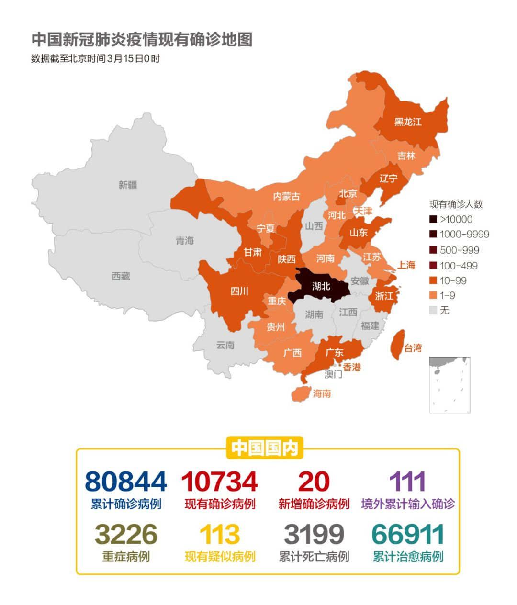
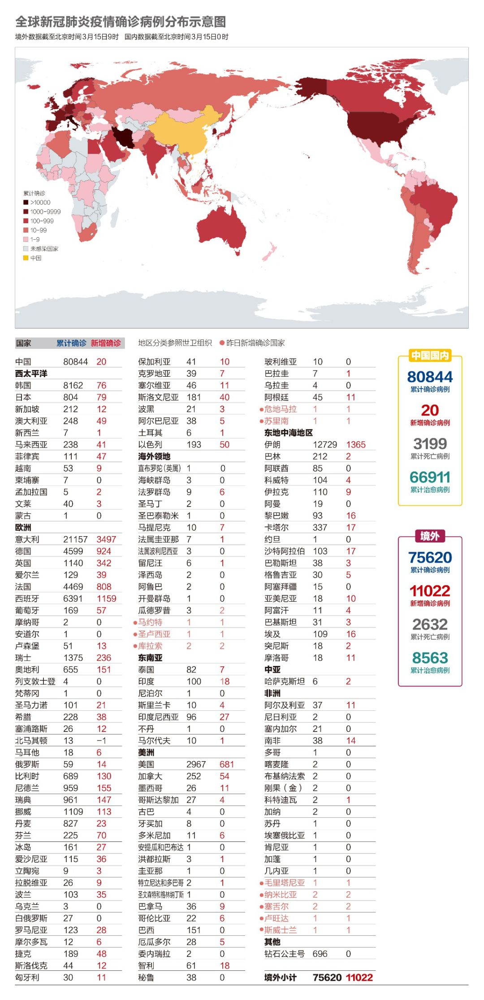
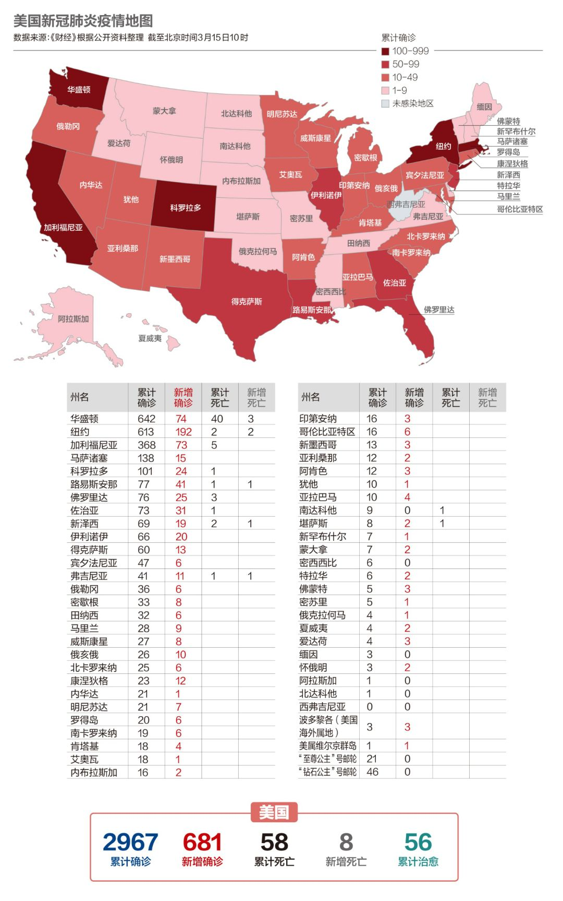
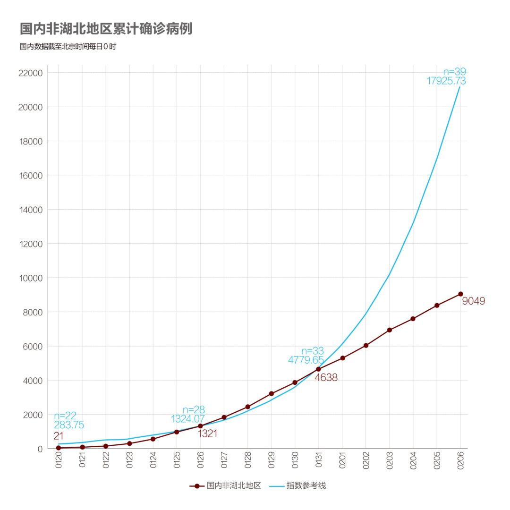
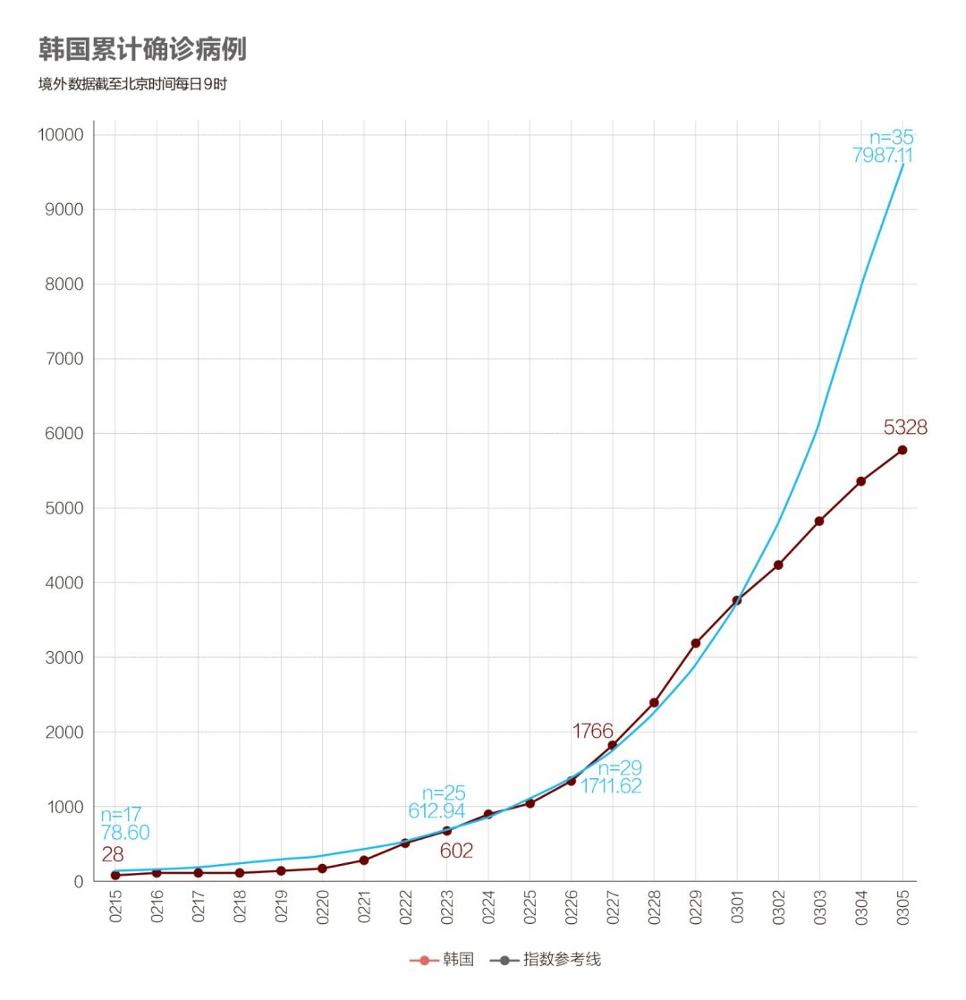
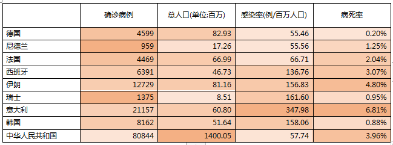
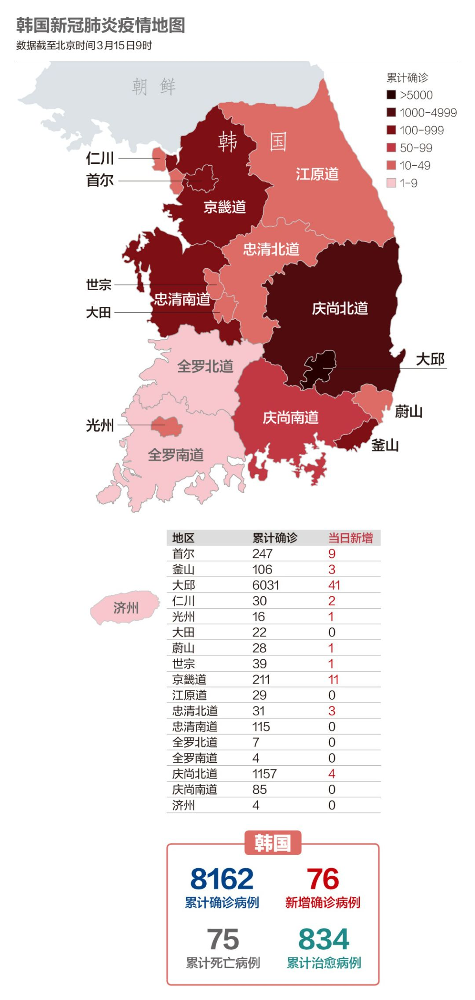

数说疫情0307：中国全力夺武汉，美国染疫州近半
原文链接 备份链接 国内31个省区市新增确诊降至两位数；全球累计确诊病例已破10万大关；意大利疫情最严重地区医疗资源已消耗殆尽 文 |《财经》数据研究员徐进 图 |《财经》视觉中心 编辑 | 郝洲 一、国内疫情防控形势继续向好，局面尽在 …

应广大网友们呼吁，今天小编又给大家准备了想看的分析内容。国内新增期待完全归零。美国疫情蔓延日益严重，正在加速进入受关注名单。欧洲多国加强管控措施

文 | 《财经》数据研究员徐进 图 | 《财经》视觉中心
编辑 | 郝洲
一、武汉新增仅4例，湖北非武汉地区连续10日零新增
图1

今日国内简述：国内3月14日报告累计确诊病例80844例，武汉新增4例。湖北非武汉地区连续10日零新增。国内湖北以外地区新增报告境外输入病例16例（北京5例，浙江4例，上海3例，甘肃3例，广东1例），本地无新增。为推动本地务工人员复工，湖北潜江市作为疫情低风险地区，安排专车“点对点”全程护送出省务工人员赴浙江绍兴返岗。为应对境外输入，首都机场全部国际及地区进港航班即日起均停靠首都机场处置专区。
二、境外确诊数直逼中国国内，联合国秘书长呼吁全球互助
图2

境外累计确诊超过7万例，很快将超过中国国内。联合国秘书长古特雷斯就新冠肺炎疫情发表讲话。在讲话中，他呼吁全球各国必须共同行动，守望相助，减缓病毒的传播。人们应谨慎行事，避免恐慌。我们应相信科学，拒绝污名化。我们应采信事实，而不屈服于恐惧。他还说，虽然已经宣布病毒传播为“大流行”，但依然可防可控。
图3

欧盟新增病例数与昨日基本持平，但依然是全球疫情的“震中”，今天小编给大家准备了想看的内容，请耐心往下看。
三、特朗普病毒检测阴性，将英国、爱尔兰旅客加入禁止入境名单
图4

美国累计确诊病例接近3000，但小编仍然坚信，美国的实际感染数字远高于此。
当地时间3月14日，美国总统特朗普已经完成新冠病毒检测，检测结果呈阴性。出于谨慎考虑，白宫将对与总统特朗普和副总统彭斯密切接触的人群进行体温检查。
美国白宫宣布将英国和爱尔兰加入欧洲旅行禁令国家名单，并于美国东部时间3月16日零点生效。此外，欧洲申根区国家受美国旅行禁令影响的数量为26个。美国公民不在禁令内，但需要在回国后接受14天的隔离。
四、指数拟合线（大家想看的在这里）
有网友希望再用指数拟合线做些走势分析。小编按照实际传染数为3.8，平均传染期5天左右做指数拟合。下面分别讨论几个主要国家、地区的情况：
湖北，疫情爆发中心 （图5.1）

1月29日（相当于n33）以前较好拟合，此后实际线（红色）逐步向右离开，说明防控措施逐步见效。
中国国内非湖北地区，无准备输入为主（图5.2）

1月31日（相当于n33）以前大体拟合，此后以非常果断的方式向右背离，说明防控措施明确有效。拟合的不尽平滑，或可归因为早期以大规模（由中心区）输入为主，而非以内生传播为主。
韩国，有准备输入+内生（图5.3）

3月1日（n32）前拟合较好，此后实际线向右明确分离。韩国在没有封城措施的情况下还能较快（n32比之于n33）达到有效控制，应主要归因于其疫情起步期比中国晚大约30天，从而有较早预警、预防，较早实现大规模检测和追踪、隔离措施的可能。
意大利，有准备输入+内生（图5.4）

意大利前期输入为主，人口和湖北接近，疫情曲线竟也异乎寻常地与疫情中心区相近。3月8日（n34）以前拟合较好，此后逐步向右，同当时的湖北一样表现犹犹豫豫。显示似乎疫情有所控制，但又很不彻底。考虑到意大利目前在检测、救治、追踪、隔离等环节所采取的实际行动，以及超高的病死率（6.8%），此情况暂且存疑。接下来我们还会进一步深入比较。
西欧其他几个主要国家，输入+内生（图5.5）

西欧其他几个主要国家，输入+内生。数据很不乐观。3月5日（n29）以后实际曲线一直坚定地站在拟合线左边，n38时，实际病例数已经比拟合理论值多了35%。这意味着它们（合计）目前的实际传染数（R值）大于3.8。
美国，有准备的输入+内生（图5.6）

尽管美国领导更喜欢说疫情是外来的，但实际上美国疫情已经转为内生为主了。美国外防输入做了一些事（限制旅行），内防传播则远远不足。实际曲线几乎被完美拟合，但这未必是好消息。因为这表明他们对疫情至今缺少实质性干预。在所有事项中，检测、收治、追踪、隔离这个工作闭环缺一不可。而美国至今连检测都远未到位。确实令人担忧。
五、法、德、西、奥等国进一步加强封锁措施，英国拟派军队维持秩序
图6

法国总理菲利普宣布，从15日零点起关闭境内非生活必需的公共场所，直到出台新的决定。受影响的公共场所包括餐馆、咖啡馆、电影院、酒吧等，而超市、药店、加油站、银行等必要生活场所则不受限制。此外，法国生态转型和团结部国务秘书普瓦尔松确认感染新冠病毒。
西班牙首相桑切斯14日晚宣布，将从即日起进入“封城”状态，全西班牙人民的行动都将受到限制，除购买食品、就医和工作等活动外，不得在街上走动，政府将随时动用武装力量施行该措施。非必要的公共场所，如商业区、博物馆、图书馆、餐馆等，将全部对公众关闭，同时全国公共交通和私人交通流量也将加以限制。疫情期间，西班牙政府将动用一切资源全力支持广大医护人员的工作。
德国所有联邦州已经宣布中小学将从下周开始停课，大部分幼儿园也已关闭。当天，德国各地继续“加码”防疫措施，首都柏林和图林根州等地出台规定，禁止举办50人以上的活动。
奥地利首都维也纳正在将该市的一座大型展览馆——维也纳展览馆改造成为一座临时性的“方舱医院”，用于收治轻度病症患者。
英国政府首席科学家提出的“群体免疫”计划引起巨大争议，但是英国实际上正在采取更多的实际措施来应对疫情高峰期的到来。英国目前已进入抗疫战争状态，英国政府将出资向私立医院租借8000张病床，以舒缓国民保健服务（NHS）旗下公立医院的压力。此外，所有70岁以上的老人将被要求在家自我隔离4个月。
英国首相约翰逊将与英国主要制造商开会，并要求他们进入备战状态，以确保把所需物资及时运送到各家公立医院。约翰逊将要求大型机械制造商劳斯莱斯及JCB等，临时更改生产线，改为生产人工呼吸器供医院使用。
还有消息称，英国将在三周内调派军队协助维持秩序，确保国家的运作。英国已经到处出现公众恐慌性抢购潮，为此，英国政府计划派出军人驻守超级市场及公立医院，协助维持秩序。此外，政府也将通过紧急法，加速处理死尸的程序，而且紧急法也将授权政府强征土地，以便提供更多墓地来埋葬死者。
作为疫情“震中”的欧洲，情况到底有多严重呢？请看下表：
表1

通过上表可以看出，欧洲，尤其是意大利、西班牙和瑞士，他们百万人口的感染率是远超其他国家和地区的。尤其需要注意的是，意大利的病死率达到了6.81%，这一数字远超世界卫生组织估算的全球平均3.4%这一数值。
图7

意大利卫生部副部长西莱利（Pierpaolo Sileri）14日在社交媒体发文称已确诊感染新冠肺炎。同一天，意大利教育部副部长阿斯卡尼（Anna Ascani）也确诊感染。
由中国国家卫生健康委员会和中国红十字会共同组建的抗疫医疗专家组13日已经开始和意大利当地的相关机构展开技术交流。之后几天，中国医疗专家组将造访意大利国家传染病研究所、意大利高等卫生研究院等机构，随后北上米兰、帕多瓦等疫情严重地区对一线医院进行实地考察。
另据中国中央指导组专家、天津中医药大学校长张伯礼透露，中国医疗专家带了两种中成药支援意大利。其中包括连花清瘟胶囊，该药物被中国多个地区在新冠肺炎诊疗方案进行推荐，成为推荐频次最多的中成药，在火神山、雷神山及方舱医院等医疗机构广泛使用。
六、韩国宣布大邱、庆北为特别灾区
图8

韩国新增病例降至76，这是自2月22日以来时隔23天首次低于100人。此外，韩国总统文在寅15日宣布，将新冠病毒疫情严重的大邱市和庆尚北道划为特别灾区，这是韩国首次因非自然灾害的原因将某地区划定为特别灾区。相当于省级的大邱市全境划入特别灾区，庆尚北道的庆山、清道、奉化三个地级行政区划入特别灾区。根据相关法律，政府将调查特别灾区受损情况，树立修复计划，并援助修复金额的50%。该地区的居民生活居住、医保、通信和燃气费等将获得减免优惠。
七、伊朗陆军进行生物防御演习
图9

截至目前，伊朗共完成了对750万人健康状况的排查工作，其中175000人出现相关症状，441人已经住院治疗。从3月15日开始，伊朗陆军将进行生物防御演习，演习目的旨在防止新冠肺炎疫情继续扩大。
【特别说明：以上统计，2月28日前为世卫组织官方统计数据，数据截止时间为北京时间每日17时；从2月28日开始，数据由《财经》根据公开资料统计，截止时间为北京时间每日9时】
小结：湖北非武汉地区连续10日零新增，非湖北地区无本地新增，国内期待完全归零。美国疫情蔓延日益严重，正在加速进入受关注名单。欧洲多国加强管控措施，英国抛出“群体免疫”论之后引发巨大争议，但英国也在稳步推进各项具体防疫措施。

▲点击图片查看更多疫情报道
责编 | 蒋丽 lijiang@caijing.com.cn
本文为《财经》杂志原创文章，未经授权不得转载或建立镜像。如需转载，请在文末留言申请并获取授权。
原文链接 备份链接 国内31个省区市新增确诊降至两位数；全球累计确诊病例已破10万大关；意大利疫情最严重地区医疗资源已消耗殆尽 文 |《财经》数据研究员徐进 图 |《财经》视觉中心 编辑 | 郝洲 一、国内疫情防控形势继续向好，局面尽在 …
原文链接 备份链接 意大利迎来最“伤心的”一天，目前全国病死率高达4.96%，为全球最高。韩国病死率约为0.70%，疫情已经稳定 文 | 《财经》数据研究员 徐进 图 | 《财经》视觉中心 编辑 | 郝洲 一、国内为进一步复工做准备 今 …
原文链接 备份链接 根据当地时间3月8日18时意大利卫生部公布的最新数据，意大利现有新冠病毒患者6387例，死亡366例，治愈622例，累计确诊感染新冠病毒总人数为7375例，较3月7日18时新增1492例，新增133例死亡病例。 据外 …
原文链接 备份链接 国内非武汉地区本地新增病例首次实现零新增，局面完全可控。韩国疫情得到初步控制；欧盟27国全部染疫；意大利扩大限流举措。 文 |《财经》数据研究员徐进 图 |《财经》视觉中心 编辑 | 郝洲 一、国内形势盼巩固，境外输 …
原文链接 备份链接 国内单日新增病例有望很快落到两位数，全国治愈率跨过60%节点。新冠疫情在海外大部分国家和地区（包括美国）还处于暴发的早期阶段。 文 |《财经》数据研究员徐进 图 |《财经》视觉中心 编辑 | 郝洲 一、 国内多地迎来 …